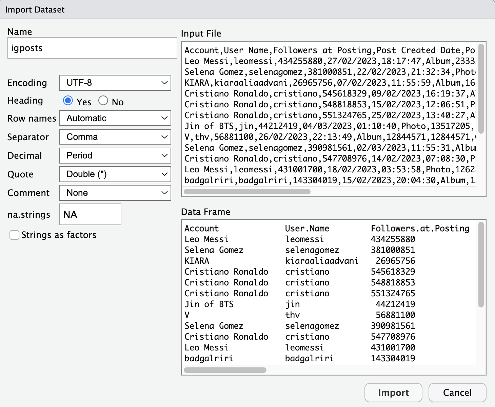

Le premier but de cette session est d’apprendre à importer des données dans RStudio à partir de fichiers CSV et de les stocker en forme de data frame (format tabulaire).
Le deuxième but est de se familiariser avec dplyr (prononcé « dee-ply-er » en anglais), un paquet du tidyverse conçu pour manipuler les données en forme de data frame.
Contrairement aux jeux de données intégrés à R (tels que diamonds, etc.), la plupart des jeux de données du monde réel nécessitent des transformations avant de pouvoir être analysés et visualisés. À cette fin, nous examinerons également certaines transformations de types de variables et un nouvel opérateur, le %>% (angl. « pipe »; trad. franç. « tuyau »), qui est très utile pour les manipulations de données.
7.1 Lire des données au format CSV dans RStudio
Par la suite, nous allons appliquer dplyr pour manipuler les données d’un jeu de données concret : un fichier CSV nommé igposts.csv. Ce fichier contient des posts Instagram de célébritées qui ont reçu beaucoup d’interactions d’utilisateurs. Pour cette application, il faut d’abord charger ce jeu de données dans notre session RStudio en cours.
NoteD’où viennent ces données ?
igposts.csv reprend les posts d’un échantillon de février–mars 2023 qui étaient encore publics le 5 octobre 2026. Les métriques (Likes, Comments, Reposts) et le nombre de followers ont été relevés à cette date : ils décrivent l’état des posts en 2026, pas au moment de leur publication. Voir À propos pour les détails.
NoteÀ noter
Un fichier de type CSV (angl. comma-separated values) est un format textuel simple pour sauvegarder des données en forme de tableau, c’est à dire avec des valeurs organisé par lignes et colonnes et séparées par virgules.
Le format CSV présente l’avantage d’être assez léger et compatible avec tous les systèmes d’exploitation. En outre, il est utile pour stocker des données quantitatives en sciences sociales, qui se présentent souvent sous forme de tableaux.
Que nous pouvons afficher comme tableau (à noter que la première ligne désigne les noms des colonnes) :
nom
prénom
âge
Leclerc
Antoine
53
Gomez
Hugo
25
Nguyen
Laetitia
19
Avant l’importation de fichier CSV dans RStudio (et comme déjà vu pleins de fois dans le cours 😉), il faut d’abord charger les paquets nécessaires avec library() et définir son répertoire de travail (vous devez adapter les paramètres de setwd() pour qu’il marche sur votre ordinateur) :
library(tidyverse)
── Attaching core tidyverse packages ──────────────────────── tidyverse 2.0.0 ──
✔ dplyr 1.2.1 ✔ readr 2.2.0
✔ forcats 1.0.1 ✔ stringr 1.6.0
✔ ggplot2 4.0.3 ✔ tibble 3.3.1
✔ lubridate 1.9.5 ✔ tidyr 1.3.2
✔ purrr 1.2.2
── Conflicts ────────────────────────────────────────── tidyverse_conflicts() ──
✖ dplyr::filter() masks stats::filter()
✖ dplyr::lag() masks stats::lag()
ℹ Use the conflicted package (<http://conflicted.r-lib.org/>) to force all conflicts to become errors
# Adaptez le chemin, puis enlevez le # :# setwd('~/Documents/exercices_methodes_2')
Pour charger le jeu de données igposts.csv dans RStudio, vous pouvez suivre le processus suivant :
Téléchargez le fichier igposts.csv (clic droit → « Enregistrer le lien sous… »).
Stockez le fichier igposts.csv dans le dossier que vous avez défini comme répertoire de travail.
Ensuite, vous utilisez le menu intéractif dans RStudio : File -> Import Dataset -> From Text (base)… et choisissez igposts.csv.
Une fenêtre avec des paramètres apparaît, que vous pouvez remplir de la manière suivante :

Importer un fichier CSV dans RStudio. Capture d’écran de RStudio Desktop (Posit Software, PBC).
Explications des paramètres :
Encoding = UTF-8 : Indique à RStudio d’utiliser l’encodage de caractères UTF-8 (qui est un standard très répandu), ce qui est important pour lire correctement toutes les lettres (notamment les caractères avec des accents : é, ä, ê, etc.).
Heading = YES : Indique à RStudio que la première ligne du fichier CSV contient les noms des colonnes.
Separator = Comma : Indique à RStudio que les valeurs du tableau sont séparées par des virgules « , » (attention, certains documents francophones utilisent le point-virgule « ; » à la place de la virgule, ce qu’il faudrait tenir en compte, si c’était le cas).
Decimal = Period : Indique à RStudio que le point « . » est utilisé pour les décimales (et non la virgule « , » comme c’est souvent le cas dans les documents en français).
na.strings = NA : valeur par défaut. Ce fichier n’a pas de valeurs manquantes ; dans d’autres fichiers (p. ex. exports Excel), elles peuvent être codées autrement, p. ex. #N/A.
Finalement, vous pouvez copier et coller le code qui apparaît dans la console dans votre script R pour facilement recharger le fichier CSV ultérieurement.
# Par exemple, en lisant le fichier directement depuis le# site du cours :igposts <-read.csv("https://julesaberlin.github.io/intro-a-R/data/igposts.csv",encoding ="UTF-8")# Si tout a bien marché, l'objet igposts devrait apparaître# dans votre environnement Nous pouvons afficher la# structure de igposts pour une première impression :str(igposts)
Cela nous montre qu’il s’agit d’un data frame avec 84 observations et 11 variables. Chaque ligne (unité statistique) représente une observation associant un post Instagram à un compte qui l’a publié ou co-publié : les 84 lignes correspondent à 82 posts distincts provenant de 33 comptes. Chaque colonne est une variable différente associée à cette observation.
Notez que les variables sont soit de type textuel (chr = « character »; p. ex. Account= le nom du compte Insta qui a publié le post), soit numérique (int = « integer »; p. ex. Total.Interactions = la somme des Likes et Comments qu’un post a reçu).
Vous pouvez aussi cliquer sur l’objet et explorer le tableau manuellement pour le comprendre davantage (comme nous l’avons fait avec mtcars, etc.).
Mise en gardeAttention
N’enregistrez pas un fichier CSV après l’avoir ouvert dans Excel (ou un autre tableur) : Excel peut modifier les dates, les zéros initiaux, le séparateur ou l’encodage, ce qui entraîne ensuite des erreurs dans R.
Vous devriez enregistrer le fichier CSV directement dans votre répertoire de travail sans l’ouvrir, puis l’importer dans RStudio à l’aide du menu interactif.
Vous devriez également éviter d’ouvrir le fichier CSV avec des applications ou autres (p. ex. une application mobile), ce qui peut également entraîner des erreurs.
Il est préférable de télécharger les fichiers CSV avec des navigateurs standard tels que Chrome ou Safari.
Avant de continuer avec dplyr, regardons encore deux éléments cruciaux pour la manipulation de données avec R :
la transformation du type de variable (p. ex. de variables textuelles en facteurs)
L’opérateur %>% (angl. « pipe »; trad. française « tuyau »)
7.3 La transformation du type de variable
Lorsque l’on analyse des jeux de données, on constate parfois que toutes les variables ne sont pas enregistrées dans un format utile pour l’analyse. Parfois, par exemple, les valeurs numériques sont enregistrées sous forme de texte. Il est alors utile de les transformer dans un format numérique (par exemple avec la fonction as.numeric().
Mais il y a aussi le cas suivant : les variables sous forme de texte ne représentent pas simplement des textes, mais certaines catégories. Dans ce cas, il est judicieux de les transformer en une variable catégorielle, c’est-à-dire un facteur, à l’aide de la fonction as.factor().
Dans notre exemple de jeu de données igposts, qui contient des métriques sur les posts Instagram, nous pouvons justement constater cela. Certes, certaines variables textuelles, telles que URL (le lien vers le post), sont tout à fait pertinentes. D’autres, en revanche, sont des catégories. La plus évidente est la variable Type, qui indique si un post Instagram est une photo ou un album (les deux catégories présentes dans igposts). Factorisons ci-dessous quelques-unes de ces variables catégorielles à l’aide de code :
# Transformons les colonnes 'Account', 'User.Name' et# 'Type' en facteurs :igposts$Account <-as.factor(igposts$Account)igposts$User.Name <-as.factor(igposts$User.Name)igposts$Type <-as.factor(igposts$Type)# Vérifier, si ça a marché :str(igposts)
Nous allons voir par la suite, pourquoi ces factorisations sont utiles.
7.4 L’opérateur %>%
La fonction principale du pipe %>% : construire une séquence de fonctions (« un tuyau ») qui est plus facile à comprendre et à lire dans le code.
# Par exemple, regardez la fonction suivante : quel est le# problème ?log(sqrt(mean(c(1:100))))
[1] 1.960987
# Le problème est que cette fonction est imbriquée et, à# cause de cela, difficile à lire# Avec le pipe, nous pouvons reécrire cette fonction comme# ça et obtenir le même résultat après exécution du code :c(1:100) %>%mean() %>%sqrt() %>%log()
[1] 1.960987
AstuceAstuce
Vous pouvez créer le pipe %>% avec les raccourcis clavier suivants :
Sur Windows : Control + Shift + M
Sur MacOS : Command + Shift + M
De plus, vous pouvez aussi utiliser le pipe natif de R, |> (depuis R 4.1). Il fonctionne sans paquet et s’utilise de la même façon que %>% dans les cas simples.
Vous pouvez déjà constater que travailler avec des jeux de données du monde réel, tels que le jeu de données Instagram igposts, nécessite un travail préparatoire substantiel. Mais rassurez-vous et ne vous découragez pas, plus vous pratiquez, plus cela devient facile et, bientôt, vous serez en mesure de charger facilement des ensembles de données dans RStudio ! Par ailleurs : il est normal de rencontrer des messages d’erreur. C’est une partie essentielle du processus d’apprentissage que de les surmonter en bricolant et en jouant avec vos données et votre code R jusqu’à ce que vous puissiez le faire fonctionner.
Après avoir chargé notre fichier CSV dans RStudio, appliqué des transformations et notre connaissance de l’opérateur pipe, nous pouvons maintenant manipuler les données avec le package dplyr.
7.5 Manipuler les données avec dplyr
Le paquet dplyr est basé sur une logique de verbes pour les différents types de manipulation de données, notamment :
Les verbes pour manipuler les données au niveau de colonnes :
select() : pour extraire une ou plusieurs colonnes d’un data frame.
mutate() : pour créer une ou plusieurs nouvelles colonnes dans un data frame.
Les verbes pour manipuler les données au niveau de lignes :
filter() : pour filtrer les lignes d’un data frame selon un ou plusieurs critères.
arrange() : pour trier les lignes d’un data frame selon un ou plusieurs critères.
Les verbes pour résumer, compter et regrouper les données :
summarize() : pour réduire une ou plusieurs colonnes d’un data frame en une seule ligne, notamment pour résumer des données.
count() : pour compter le nombre d’observations d’une ou plusieurs catégories dans un data frame.
group_by() : pour regrouper des données d’un data frame selon une ou plusieurs catégories.
Essayons maintenant d’appliquer tout cela avec du code et les données igposts pour comprendre ce que ça veut dire en pratique !
7.6 Manipulation de colonnes : select() et mutate()
# select() : fonction pour extraire une ou plusieurs# colonnes d'un data frame# Par exemple, nous pouvons extraire les quatres colonnes# suivantes d'igposts (voir comment le pipe est utilisé) :igposts %>%select(Account, Type, Followers.at.Observation, Total.Interactions)# Avec les deux points dans la fonction select(), vous# pouvez sélectionner plusieurs colonnes successives. Notez# que cette fois-ci, nous affichons que les six premières# lignes avec la fonction head() :igposts %>%select(Account:Reposts) %>%head()# Vous pouvez également créer un nouvel objet, df1, qui est# essentiellement un data frame plus petit que igposts avec# un sous-ensemble de variables (un tel data frame plus# petit peut être plus utile à analyser et à afficher) :df1 <- igposts %>%select(Account, Type, Followers.at.Observation, Total.Interactions, URL)################################################################################ mutate() : fonction pour créer une ou plusieurs nouvelles# colonnes dans un data frame# Par exemple, nous pouvons créer une nouvelle colonne qui# compte le nombre d'interactions par follower :df1 %>%mutate(TI_par_Follower = Total.Interactions/Followers.at.Observation)# Attention, sans opérateur <-, nous ne changeons pas# l'objet df1 ! Pour ce faire et sauvegarder notre# nouvelle colonne, nous pouvons écraser df1 avec une# nouvelle vérsion de df1 :df1 <- df1 %>%mutate(TI_par_Follower = Total.Interactions/Followers.at.Observation)str(df1)
7.7 Manipulation de lignes avec filter() et arrange()
# filter() : fonction pour filtrer les lignes selon un ou# plusieurs critères# Pour filtrer pour une valeur spécifique d'une variable,# p.ex. les posts de Cristiano Ronaldo :df1 %>%filter(Account =="Cristiano Ronaldo")# Pour plusieurs valeurs spécifique de la même variable, p.# ex. les posts de Ronaldo et Messi :df1 %>%filter(Account %in%c("Cristiano Ronaldo", "Leo Messi"))# Pour plusieurs valeurs spécifiques de variables# différentes, p. ex. les posts de type Photo de Ronaldo :df1 %>%filter(Account =="Cristiano Ronaldo", Type =="Photo")# Filtrer à partir de valeurs numériques, p. ex. les posts# avec au moins 10 millions d'interactions :options(scipen =999) # Cette commande désactive la notation scientifique des nombresdf1 %>%filter(Total.Interactions >=1e+07)# Filtrer pour les posts de Selena Gomez avec au moins 10# millions d'interactions :df1 %>%filter(Account =="Selena Gomez", Total.Interactions >=1e+07)################################################################################ arrange() : fonction pour trier les lignes selon un ou# plusieurs critères# Trier des valeurs/facteurs textuelles par ordre# alphabétique :df1 %>%arrange(Account) %>%head(10)# Trier par le nombre d'interactions (ordre croissant)df1 %>%arrange(Total.Interactions) %>%head(10)# Trier par le nombre d'interactions par follower (ordre# décroissant)df1 %>%arrange(desc(TI_par_Follower)) %>%head(10)
7.8 Résumer, compter et regrouper avec summarize(), count() et group_by()
# summarize() : fonction qui réduit une ou plusieurs# colonnes en une seule ligne, notamment pour résumer des# données# Nous pouvons, par exemple, résumer la somme totale de# Total.Interactions dans notre ensemble de données. Ce# nombre est assez impressionnant et constitue une# caractéristique importante de notre ensemble de données.df1 %>%summarize(sum_TI =sum(Total.Interactions))# Nous pouvons aussi calculer les moyennes des interactions# et de followers de tout les comptes qui ont publié les# posts :df1 %>%summarize(mean_TI =mean(Total.Interactions), mean_Followers =mean(Followers.at.Observation))################################################################################ count() : fonction qui compte le nombre d'observations# d'une ou plusieurs catégories# Compter l'occurence des types de posts Instagram (Photo# et Album, dans ce cas) dans notre jeu de données :df1 %>%count(Type)# Compter l'occurence des différents comptes dans notre jeu# de données :df1 %>%count(Account)# Compter l'occurence des différents comptes dans notre jeu# de données en les triant par cette occurence de manière# décroissante (avec le paramètre arrange(-n)) :df1 %>%count(Account) %>%arrange(-n) %>%head(10)################################################################################ group_by() : fonction qui regroupe des données selon une# ou plusieurs catégories# Regroupement par type de post et comparaison du nombre# moyen d'interactions par type de post :df1 %>%group_by(Type) %>%summarize(mean_TI =mean(Total.Interactions))# En utilisant le paramètre n=n() dans la fonction# summarize(), nous pouvons également compter le nombre# d'observations dans chaque catégorie :df1 %>%group_by(Type) %>%summarize(n =n(), mean_TI =mean(Total.Interactions))# Utilisons plusieurs verbes dplyr pour trouver les 10# comptes qui apparaissent le plus fréquemment dans nos# ensembles de données de posts Instagram. Nous résumons# également leur nombre moyen de followers et# d'interactions.df1 %>%group_by(Account) %>%summarize(n =n(), mean_Followers =mean(Followers.at.Observation),mean_TI =mean(Total.Interactions)) %>%arrange(desc(n)) %>%head(10)# Utilisons plusieurs verbes dplyr pour comparer les Likes# et Comments des posts de Ronaldo et Messi :igposts %>%group_by(Account) %>%filter(Account %in%c("Cristiano Ronaldo", "Leo Messi")) %>%summarize(n =n(), mean_Followers =mean(Followers.at.Observation),mean_Likes =mean(Likes), mean_Comments =mean(Comments))
À faire avant de continuer
Vérifiez que vous savez importer igposts.csv, depuis votre ordinateur ou directement depuis le site : les chapitres suivants utilisent d’autres fichiers CSV.
Si les exercices vous posent problème, refaites le code des chapitres précédents et assurez-vous de comprendre chaque étape.
Exercices
Choisissez Vrai ou Faux, cochez une réponse ou tapez un nombre : la couleur indique tout de suite si votre réponse est correcte. Cliquez sur Explication pour voir la correction.
Question 7.1
Quel compte (User.Name) a publié le post de igposts.csv ayant reçu le plus de Total.Interactions ?
Réponse :
Triez igposts par Total.Interactions décroissant : le premier post est celui de leomessi (22 626 965 interactions). Ouvrez son URL pour voir de quoi il s’agit : https://www.instagram.com/p/CpLxnFlNJZn/
Question 7.2
Quel est le rôle principal de l’opérateur %>% dans dplyr ?
Le pipe%>% transmet le résultat d’une fonction comme premier argument de la suivante. On enchaîne ainsi les étapes de gauche à droite au lieu d’imbriquer les fonctions : x %>% f() %>% g() équivaut à g(f(x)).
Question 7.3
Exécutez le code R suivant et jugez chaque proposition :
La fonction arrange(mpg) trie les voitures de mtcars par valeurs mpg croissantes.
La fonction arrange(mpg) trie les voitures de mtcars par valeurs mpg décroissantes.
Plus la valeur mpg d’une voiture est élevée dans mtcars, plus elle peut aller loin avec une unité (gallon) de carburant.
Le code R modifie l’objet mtcars dans l’environnement de RStudio lorsqu’il est exécuté.
La Cadillac Fleetwood utilise le carburant le plus efficacement de toutes les voitures du jeu de données.
a) et b) arrange() trie par ordre croissant ; pour l’ordre décroissant, on écrit arrange(desc(mpg)).
d) Sans affectation (<-), le résultat est seulement affiché : mtcars ne change pas.
e) La Cadillac Fleetwood apparaît en premier : c’est l’une des voitures les moins efficaces (10,4 mpg).
Question 7.5
Exécutez le code R suivant et jugez chaque proposition. La fonction rnorm() simule des valeurs aléatoires qui se rapprochent d’une loi normale ; on suppose ici qu’il s’agit de tailles de femmes en Suisse (en cm).
library(tidyverse)taille_f <-rnorm(500, mean =164.7, sd =5.6) %>%as.data.frame()taille_f %>%count(taille_f <=160)
La fonction count(taille_f <= 160) compte le nombre de valeurs inférieures ou égales à 160 (femmes de 160 cm ou moins) ainsi que celles supérieures à 160 (femmes de plus de 160 cm).
En général, la fonction count() de dplyr est utile pour compter le nombre d’observations d’un jeu de données qui correspondent à certains critères.
Si vous exécutez le code plusieurs fois de suite, vous obtiendrez toujours un résultat légèrement différent, car la fonction rnorm() génère des valeurs « aléatoires ».
taille_f est un objet de type data frame dans RStudio.
taille_f comporte 100 lignes (observations).
a) et b) Le critère taille_f <= 160 vaut TRUE ou FALSE ; count() compte les lignes de chaque groupe.
c) Chaque appel à rnorm() tire de nouvelles valeurs (sauf si l’on fixe set.seed()).
d) as.data.frame() transforme le vecteur en data frame.
e) rnorm(500, ...) crée 500 valeurs, donc 500 lignes, pas 100.
Le post a été publié par le compte Instagram dont le User.Name est zendaya.
Il s’agit d’un post Instagram de type Album.
Il s’agit d’un post Instagram de type Video.
Le post a reçu plus de 250 Reposts.
Zendaya est une actrice et chanteuse britannique.
On peut aussi chercher le post dans les données : igposts %>% filter(grepl("CpHHbGWunhI", URL)) %>% select(User.Name, Type, Reposts). Le post vient de zendaya, il est de type Album et compte 284 Reposts.
e) Zendaya est américaine.
Question 7.7
Le terme CSV désigne un format de texte ouvert permettant de représenter des données tabulaires sous forme de valeurs séparées par des virgules.
CSV signifie comma-separated values : chaque ligne du fichier est une observation, et les valeurs sont séparées par des virgules.
Question 7.8
La fonction as.factor() peut être utilisée pour transformer des variables textuelles et numériques en facteurs.
as.factor() convertit un vecteur textuel ou numérique en facteur, p. ex. mtcars$cyl <- as.factor(mtcars$cyl).
Question 7.9
Un fichier CSV stocke des données textuelles dans lesquelles les valeurs sont généralement séparées par des espaces.
Dans un fichier CSV (comma-separated values), les valeurs sont séparées par des virgules (parfois des points-virgules), pas par des espaces.
Question 7.10
Lors de l’importation de fichiers CSV dans RStudio, il est important de savoir si les séparateurs décimaux des valeurs numériques sont des points (p. ex. 4.5) ou des virgules (p. ex. 4,5).
Si le séparateur décimal est mal indiqué, les nombres sont lus comme du texte. L’argument dec de read.csv() le précise ; read.csv2() est prévu pour les fichiers avec virgule décimale et point-virgule comme séparateur.
Question 7.11
Dans igposts.csv, les valeurs de Likes correspondent au nombre de likes au moment de la publication des posts en 2023.
Les métriques ont été relevées le 5 octobre 2026 sur les pages Instagram publiques : elles reflètent l’état des posts à cette date, pas en 2023.
Question 7.12
L’unité statistique (ou unité d’analyse) du jeu de données igposts.csv est le compte Instagram de célébrités telles que Cristiano Ronaldo et Kendall Jenner.
L’unité n’est pas le compte Instagram : chaque ligne de igposts est une observation associant un post à un compte qui l’a publié ou co-publié. Le fichier contient 84 lignes correspondant à 82 posts distincts provenant de 33 comptes. Un même compte apparaît donc sur plusieurs lignes.
Question 7.13
Dans le code R suivant, l’argument na.strings = "#N/A" indique à R comment les valeurs manquantes sont désignées dans le fichier CSV importé.
Toutes les cellules contenant #N/A sont lues comme NA, la valeur manquante de R. Sans cet argument, une colonne numérique contenant #N/A serait lue comme du texte. (Le fichier igposts.csv du cours n’a pas de valeurs manquantes : la valeur par défaut, na.strings = "NA", suffit.)